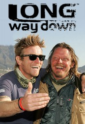

")
 
 IMDB-Wertung: 8.4 / 10
IMDB-Wertung: 8.4 / 10  Metascore:
Metascore: 
Drei Jahre nach ihrem Motorradtrip rund um die Welt war es für die befreundeten Schauspiel-Stars Ewan McGregor und Charley Boorman wieder soweit: Für „Unterwegs zum Kap“ brachen die Freunde erneut zu einer Reise auf, die sie auf ihren BMW-Maschinen diesmal von London bis nach Cape Town in Südafrika führte. Die zehnteilige Dokureihe begleitet die Abenteurer über 24.000 Kilometer und 85 Tage durch Frankreich, Italien, Tunesien, Libyen, Ägypten, Sudan, Äthiopien, Kenia, Uganda, Ruanda, Tansania, Malawi, Sambia, Namibia, Botswanan bis nach Südafrika. Unterwegs nehmen sich die beiden Biker immer wieder Zeit, um sich mit den Einheimischen zu unterhalten, sich über die Arbeit von Hilfsorganisationen wie UNICEF oder CHAS zu informieren – und natürlich, um die landschaftliche Schönheit der unterschiedlichen Länder in vollen Zügen zu genießen. Extreme körperliche und emotionale Herausforderungen bleiben auf einem extremen Trip wie diesem nicht aus – aber McGregor und Boorman meistern auch schwierige Situationen mit Improvisationstalent und ihrem ganz speziellen Sinn für schwarzen Humor...
Jahr: 2007
Dauer: 59 Minuten
FSK:
Land: England Studio: Jeridoo ProductionsTonspuren:
Untertitel:
Auflösung: SD (720x404) Größe: 128000 MB
Genre: Dokumentation, TV-Serie
Regisseur: David Alexanian, Russ Malkin
Drehbuch: Carol Fuchs
Soundtrack:
Darsteller:
 Ewan McGregor als Himself
Ewan McGregor als HimselfDatei: X:\Dokumentationen\Sport\Long Way Down\Long Way Down - Ep01 28.10.07.avi seit 24.01.2017
Festplatte: HD Serien(SU-Z)+Dokus+Musik
 Es gibt insgesamt 34 Filme in der Gruppe 'Dokumentationen\Sport'
Es gibt insgesamt 34 Filme in der Gruppe 'Dokumentationen\Sport'